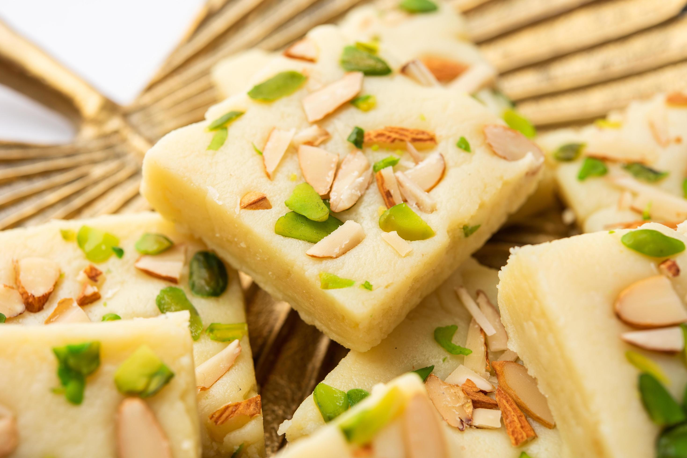
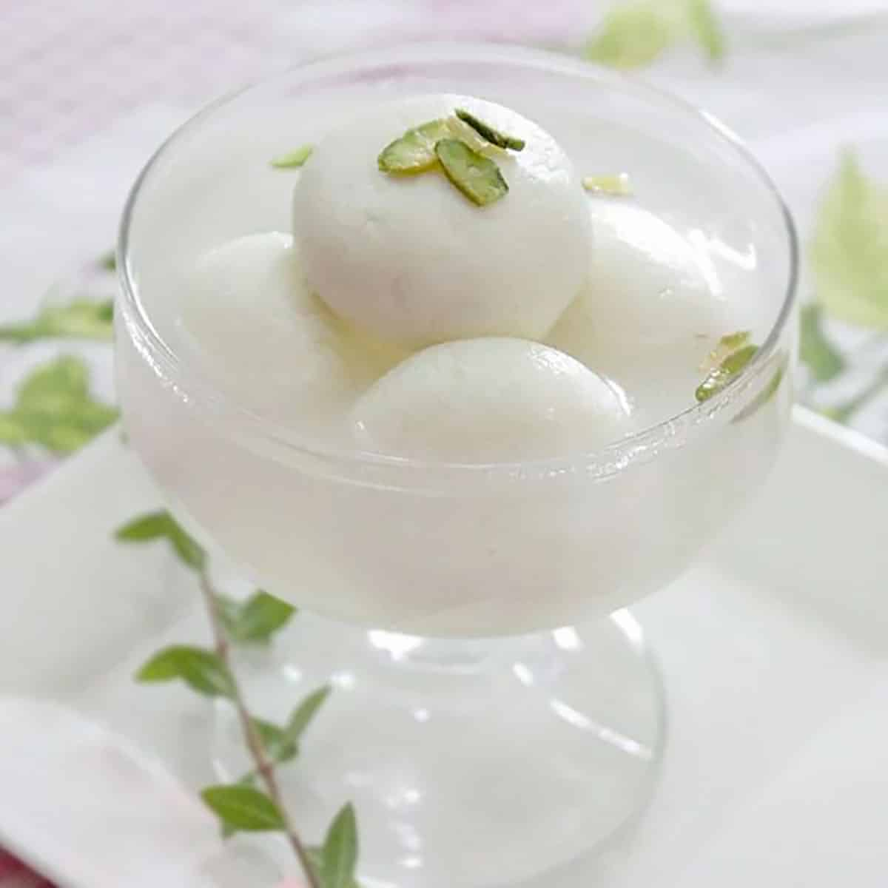

Gulab Jamun
Ingredients
- Sugar
- Bread
- Oil
Recipe
- Boil sugar with water to make syrup (add cardamom/rose essence if desired).
- Trim bread edges, soak in milk, and knead into smooth dough.
- Shape small balls and deep fry in medium-hot oil until golden brown.
- Soak fried balls in warm syrup for 30 minutes before serving.

Barfi
Ingredients
- Milk Powder
- Ghee
- Sugar
- Cardamom
Recipe
- Heat ghee in a pan and mix with milk powder.
- Prepare sugar syrup until slightly sticky and add to mixture.
- Cook until thick and leaves the sides of the pan.
- Pour into a greased plate, set, and cut into desired shapes.

Rasgulla
Ingredients
- Milk
- Lemon juice / Vinegar
- Sugar
- Water
Recipe
- Boil milk and curdle it with lemon juice/vinegar to make chenna.
- Drain, wash, and knead chenna into a smooth dough.
- Shape into small balls and boil in sugar syrup until they expand.
- Serve chilled in syrup after resting.

Kaju Katli
Ingredients
- Cashews
- Sugar
- Water
- Ghee
Recipe
- Grind cashews into a fine powder.
- Boil sugar with water to form a one-string syrup.
- Add cashew powder and cook until it thickens into dough.
- Roll, cut into diamond shapes, and garnish with silver leaf.